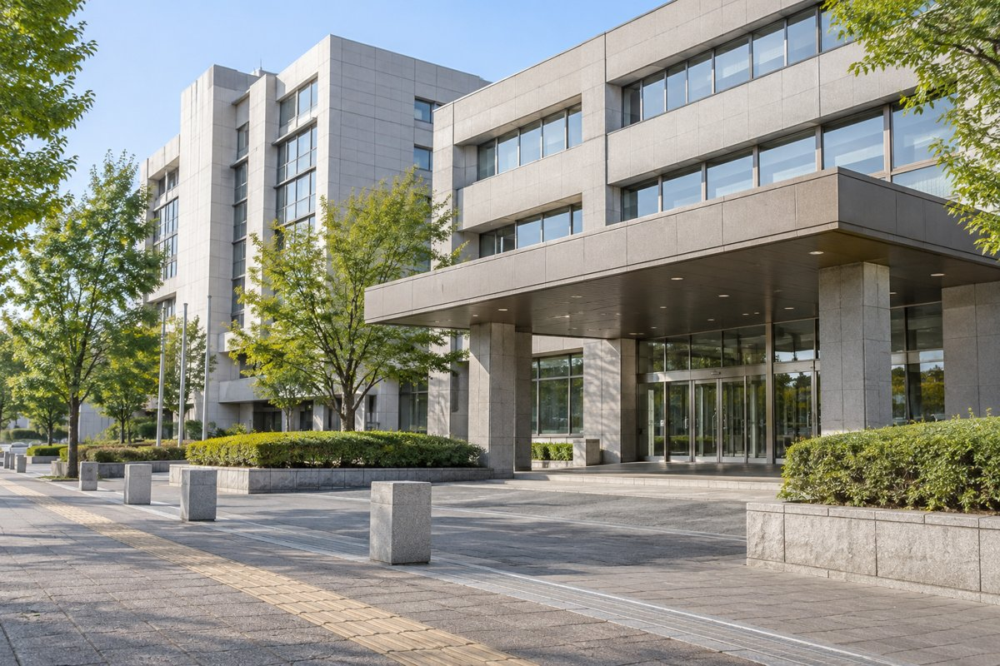

2027年4月入園の一次募集は、窓口が2026年10月19日（月）から11月4日（水）まで。電子申請・郵送は10月14日（水）から受け付けています。この記事では、相談先、必要書類、提出方法、申込み後の確認までを順にまとめます。
対象は認可保育園、認定こども園の保育利用、地域型保育事業です。幼稚園・認定こども園の教育利用は別の申込手続きになります。
1．2027年4月入園の申込日程
入園するのは2027年4月ですが、一次募集の申込みは2026年秋です。まずは家族のカレンダーに締切を書き込み、勤務先へ書類を頼む日も決めておきましょう。
| 募集 | 受付期間・結果の目安 |
|---|---|
| 一次募集・窓口 | 2026年10月19日（月）〜11月4日（水）必着。原則、平日8:30〜17:15。 |
| 一次募集・電子申請／郵送 | 2026年10月14日（水）から受付。締切は11月4日（水）。オンラインも最終日まで待たず、申請画面の受付期限を確認して送信します。 |
| 一次募集の結果 | 2027年1月中旬に通知予定。 |
| 二次募集 | 2026年11月5日（木）〜2027年2月16日（火）必着。 |
| 三次募集 | 2027年2月17日（水）〜3月9日（火）必着。 |
一次募集の臨時窓口に限り、10月31日（土）・11月1日（日）も8:30〜17:15に受け付けます。福祉事務所や支所の休日受付ではありません。郵送は、市に届く日が締切に間に合うように準備します。
日程の出典：岡山市「令和9年4月入園手続きについて」。
2．迷ったら、保育コンシェルジュと就園管理課へ
「どこに相談したらいい？」と迷うときは、質問を二つに分けると整理できます。園の探し方や利用できるサービスは保育コンシェルジュへ。申込書類や家庭ごとの手続きは就園管理課へ相談しましょう。岡山市の正式な相談窓口名は「保育コンシェルジュ」です。

| 相談先 | 相談内容・連絡先 |
|---|---|
| 保育コンシェルジュ | 家や職場の近くの施設、保育サービスの選択肢、入園できなかった場合の相談など。専用電話086-803-1313。月〜金の9:00〜12:00、13:00〜17:00、祝日を除く。 |
| 就園管理課 支援係 | 申込書類、利用調整、転入予定、家庭の事情に応じた手続きなど。電話086-803-1432。市の開庁時間は平日8:30〜17:15。 |
| 希望する園 | 見学、送迎時間、費用、アレルギーへの対応など、実際の園生活に関すること。 |
福祉事務所でも保育コンシェルジュに相談できます。場所ごとに相談時間が異なるので、市の相談窓口一覧で確認し、来所前に当日の在席状況を問い合わせてください。
相談の前に、四つだけメモ
「子どもの生年月日」「預けたい時期」「保護者それぞれの就労・復帰予定」「送迎できる範囲」を書いておくと、相談しやすくなります。希望園が決まっていなくても、何に困っているかを伝えて構いません。
医療的ケアが必要な場合は、申込み前に幼保運営課の相談窓口（086-803-1227）へ。発達や集団生活について配慮が必要な場合も、早めに市と園へ相談してください。
3．受入見込みと、毎日通える条件を一緒に確認
候補園は、受入見込みだけでなく、朝夕の送迎時間、勤務先までの移動、開所時間、延長保育、費用を比べて選びます。きょうだいがいる場合は、別々の園になったときに送迎できるかも家族で話しておくとよいでしょう。
岡山市の2027年4月入園・受入見込み情報は参考情報です。掲載時点から状況が変わることがあり、受入れや入園を保証するものではありません。保育園MAPで候補を探した後は、公式資料と園への確認を組み合わせてください。
希望順位は、実際に通いたい順に家族で整理します。市は点数などの基準で利用調整し、同点の場合には希望順位も判断材料になります。点数の目安は令和9年度の得点計算ツールへ。基礎点数は保護者それぞれ10点満点で、2人分を合算し、世帯の調整点数を加減算します。
見学できる場合は、園見学チェックリストを使って質問をメモしておくと、あとで候補を比べやすくなります。
4．必要書類は「子どもごと」「保護者ごと」に整理
最初に市の入園関係書類ページから、令和9年度の様式を確認します。前年の申込書をそのまま使わず、対象年度と記入例を確かめてください。紙の様式は市の案内に沿ってA4用紙に両面印刷します。
| 書類・確認するもの | そろえる単位・注意点 |
|---|---|
| 教育・保育給付認定申請書兼保育利用申込書 | 2号・3号認定用。児童1人につき1枚。きょうだい同時申込みでも申込書はそれぞれ用意します。 |
| 保育の必要性を示す書類 | 保護者それぞれの状況に応じて準備。利用希望月の1日時点の状況を基準に確認します。 |
| マイナンバー届出用紙 | 児童1人につき1枚。過去に提出済みの場合は再提出不要とされています。記載する世帯員や確認資料は用紙裏面を確認します。 |
| 本人確認書類 | 窓口では提示、郵送では申請者の写しを添付。電子申請はカードによる本人確認と申請画面の案内に従います。 |
| 保育利用申込確認票 | 令和9年度の確認票で記入漏れや希望条件を点検。提出時の扱いも様式の案内に従って確認します。 |
| 該当する家庭の追加資料 | 課税証明書、ひとり親世帯の確認資料、障害や医療的配慮に関する資料など。家庭によって異なります。 |
きょうだいを同時に申し込む場合、保護者の「保育の必要性」を示す書類は、最年長の児童の申込書にだけ添付する扱いがあります。すべての書類が共用になるわけではないので、ガイドP.8〜10で確認しましょう。
仕事・育休復帰・求職中などで添付書類が変わる
| 保護者の状況 | 主な書類・確認点 |
|---|---|
| 会社などで就労 | 就労証明書。複数の勤務先がある場合は全勤務先分と、その旨の申立書を確認。 |
| 自営業 | 就労証明書のほか、直近の金銭のやり取りを確認できる資料など。ガイドでは概ね3か月以内の資料3枚以上を案内しており、確定申告書や開業届だけでは代用できません。 |
| 育児休業から復帰予定 | 育休期間が証明された就労証明書と「申し込みについての誓約書」。 |
| 採用・起業・就学予定 | 予定を示す書類に加え、「申し込みについての誓約書」。状況ごとの添付を公式ガイドで確認。 |
| 求職中 | 求職活動状況申告書。 |
| 妊娠・出産、病気、障害、介護、就学 | 保育利用事由申告書と、手帳の写し・証明書・在学や時間割の資料など、事由に応じた添付書類。 |
一次募集に添付する就労証明書は、2026年9月11日以降の証明が必要です。勤務先での発行に時間がかかることもあるので、先に依頼しておきましょう。保護者自身で証明内容を書き換えず、誤りがあれば作成した勤務先へ相談します。
転入・転園・ひとり親などの事情は、提出前に相談
2026年1月1日に岡山市に住民登録がなかった保護者は、令和8年度の市区町村民税課税証明書が必要となる場合があります。非課税や扶養に入っている場合も確認が必要です。転入予定、海外居住、ひとり親世帯などは、必要な資料を就園管理課へ確認してください。
現在の園に在園したまま4月転園を申し込む場合にも注意が必要です。市のガイドでは、年度末に現在の施設を退園する扱いが示されています。結果によっては通い続けられないため、申込み前に市へ確認しましょう。
書類の出典：令和9年度保育利用ガイドP.8〜10、入園関係書類ダウンロードページ。詳細だけ見直したい方は必要書類の記事もご覧ください。
5．窓口・オンライン・郵送のどれで申し込む？
家庭で準備しやすい方法を選びます。窓口へ行けば書類の不足がすべて解消する、オンラインなら添付は不要、といった違いではありません。どの方法でも、必要な情報と書類を期限内に提出します。
窓口申請：一次募集は旧庁舎の臨時受付に注意
市役所の一次募集受付は、旧庁舎1階多目的ルームの臨時窓口です。新庁舎12階の就園管理課では、一次募集期間中の4月入園申込みを受け付けません。各福祉事務所や御津・建部・瀬戸・灘崎の各支所でも受付があります。
臨時窓口はWEB予約ができます。予約受付は10月14日8:30から11月1日16:00までで、11月2日・4日はWEB予約の対象外です。予約なしでも順番に受付があります。予約リンクや当日の場所は、市の4月入園手続きページから確認してください。
オンライン申請：令和9年度の「ぴったりサービス」を選ぶ
新規の保育利用申込みには、マイナポータルの「ぴったりサービス」を使います。市の電子申請ページにある「令和9年度教育・保育給付認定申請兼保育利用申込」から進むと、対象年度を確認しやすくなります。
- 申請する保護者のカードと端末を準備。マイナンバーカード、署名用電子証明書の暗証番号、NFC対応スマートフォンなどを用意します。暗証番号は4桁のものとは異なります。
- 添付書類を撮影・スキャン。就労証明書などをPDF・JPEG等にし、四隅、文字、裏面まで読めるか確認します。
- フォームへ入力。希望園や家庭の状況を入力し、必要な添付を登録します。先に紙の様式へ下書きしておく方法も市が案内しています。
- 内容を確認して送信。申請者と本人確認に使うカードの名義をそろえます。送信後は申込内容のPDFを保存します。
- 受理・不受理の連絡を確認。自動の受信通知だけで終わりにせず、市が内容確認後に送るメールも確認します。不備の連絡には期限までに対応してください。
添付した書類の原本は保管しておきます。不鮮明な場合などに原本提出を求められることがあります。申込み後の希望園変更などは、別の岡山市電子申請サービスを使うため、市の電子申請ページで手続きを選び直してください。
オンライン申請の出典：市の電子申請案内・2026年10月14日版の電子申請Q&A。
郵送申請：到着までの日数を見込む
送付先は、〒700-8544 岡山市北区大供一丁目1番1号「岡山市就園管理課」です。市は特定記録郵便や簡易書留の利用を勧めています。書類一式と本人確認書類の写しを点検し、控えを残して余裕を持って発送します。締切日に投函しても、必着の条件は満たせません。
6．提出した後も、連絡先と変更事項を確認
申込みを終えたら、控えを一つのフォルダにまとめます。連絡先の電話番号やメールを確認し、市からの不備連絡を見落とさないようにしましょう。勤務先、世帯、住所、希望園などが変わったときは、変更手続きが必要か市へ相談します。
一次募集の結果は2027年1月中旬に通知予定です。市は申請者の連絡先へ、WEBで結果を確認するためのURLと認証コードを送ると案内しています。内定後は園からの案内に沿って健康診断や入園準備を進めます。4月一次募集では園からの連絡を待つ扱いなので、通常の途中入園の流れと混同しないようにしてください。
一次で利用不可となり、二次で希望園を変える場合は、二次募集の期限までに変更届を提出します。利用不可だった園でも、二次で受入れが可能になる場合があります。選択肢に迷ったときは、保育コンシェルジュへ相談しましょう。
7．提出前のチェックリスト
- 令和9年度・2027年4月入園の様式を使っている。
- 子どもごとの申込書と、保護者ごとの事由書類を確認した。
- 就労証明書の証明日・勤務時間・育休期間などを確認した。
- 誓約書や課税証明書など、該当する追加書類を確認した。
- 実際に通える園を、希望する順に記載した。
- 紙の控え、または送信した内容のPDFを保存した。
- 提出方法ごとの期限と、受理確認の方法を確認した。
一度で全部を覚えようとせず、「必要書類を洗い出す」「勤務先へ依頼する」「相談する」「提出する」に分けて進めれば大丈夫です。分からない項目は推測で埋めず、その欄の名前を伝えて市へ確認しましょう。
確認した岡山市の公開資料
2026年10月17日確認。日程や様式の訂正が出る場合があるため、提出前には公式ページもご確認ください。